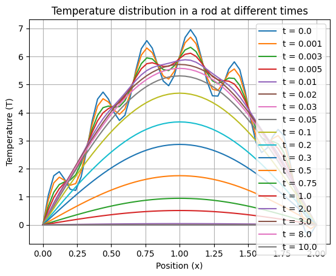
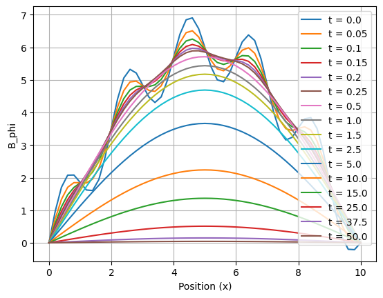
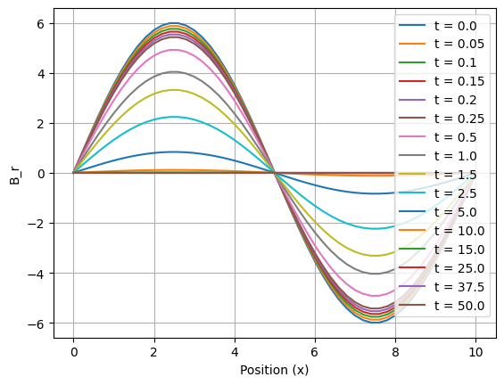
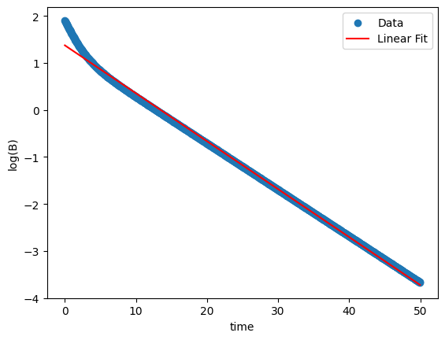

import matplotlib.pyplot as plt
# Define initial and final positions of the bar, number of spatial and time grid points
a0 = 0
bo = 2
xpoints = 100
ti = 0
tf = 10
tponts = 10000
# Calculate spatial and time step sizes
xstep = (bo - a0) / xpoints
tstep = (tf - ti) / tponts
# Calculate alpha value
alpha = tstep / (xstep ** 2)
print("alpha =", round(alpha, 4), "< 0.5")
# Define functions g(x), a(t), and b(t)
# def g(x):
# if x == 0:
# return 300
# else:
# return 0
def g(x):
return 6*np.sin((np.pi)*x/2)+np.sin(np.pi*x*6)
def a(t):
return 0
def b(t):
return 0
# Iterate over different time points
time_points = [0,1,3, 5, 10, 20, 30, 50, 100, 200,300, 500,750,1000, 2000,3000,8000,10000]
for time_point in time_points:
x_values, temperature_values, time_values = pde_explicit_solve(g, a, b, a0, bo, ti,tf, xpoints,tponts, time_point)
plt.plot(x_values, temperature_values, label="t = " + str(time_values[-1]))
del x_values, temperature_values, time_values
plt.legend()
plt.title("Temperature distribution in a rod at different times")
plt.xlabel("Position (x)")
plt.ylabel("Temperature (T)")
plt.grid()
plt.show()alpha = 0.625 < 0.5

import numpy as np
import scipy as scipy
import math as math
from scipy.optimize import root
def crank_nicolson(g: callable,a: callable, b: callable, x0: float, x_m: float, t0: float, t_m: float, N_x: int, N_t: int,req_time_step: int,iflist=True,k=1):
'''
# Crank Nicolson Method
for solving the heat equation of the form u_xx = k*u_t
## Parameters
- g: Initial condition function u(x,t=0) = g(x)
- a: Boundary condition function u(x=0,t) = a(t)
- b: Boundary condition function u(x=x_m,t) = b(t)
- x0: Initial value of x
- x_m: Final value of x
- t0: Initial value of t
- t_m: Final value of t
- N_x: Number of steps to divide the interval [x0,x_m]
- N_t: Number of steps to divide the interval [t0,t_m]
- req_time_step: The time step to which the solution is to be calculated
- iflist: If True, the function will return the list of u values, if False, the function will return u as a column matrix or a vector
- k: The thermal diffusivity
## Returns
- x: List of x values
- t: List of t values
- u: List of List of u values or vector depending on the value of iflist
'''
hx = (x_m - x0) / N_x
ht = (t_m - t0) / N_t
x=[x0 + i*hx for i in range(1,N_x)]
alpha = (ht / (hx**2))/k
u = [[g(i)] for i in x]
B = [[0 for i in range(N_x-1)] for j in range(N_x-1)]
I = [[0 for i in range(N_x-1)] for j in range(N_x-1)]
for i in range(len(B)):
for j in range(len(B[i])):
if i==j:
B[i][j]=2*alpha
I[i][j]=2
elif abs(i-j)==1:
B[i][j]=-1*alpha
matrix1=[[I[i][j]-B[i][j] for j in range(N_x-1)] for i in range(N_x-1)]
matrix2=[[I[i][j]+B[i][j] for j in range(N_x-1)] for i in range(N_x-1)]
#matrix21=Get_Gauss_jordan_inv(matrix2)
matrix21 = np.linalg.inv(matrix2)
del matrix2
matrix3=np.matmul(matrix21,matrix1)
del matrix1,matrix21
matrix4=np.linalg.matrix_power(matrix3,req_time_step)
del matrix3
v_req = np.matmul(matrix4,u).tolist()
del matrix4
v_req.insert(0,[a(t0)])
v_req.append([b(t0)])
x.insert(0,x0)
x.append(x_m)
ulist=[]
if iflist==False:
return x,v_req,[t0 + i*ht for i in range(N_t+1)]
else:
for i in range(len(v_req)):
ulist.append(v_req[i][0])
return x,ulist,[t0 + i*ht for i in range(req_time_step+1)]
import matplotlib.pyplot as plt
a0 = 0
bo = 10
xpoints = 50
ti = 0
tf = 50
tponts = 1000
# Calculate spatial and time step sizes
xstep = (bo - a0) / xpoints
tstep = (tf - ti) / tponts
# Calculate alpha value
alpha = tstep / (xstep ** 2)
print("alpha =", round(alpha, 4))
def g_phi(x):
return 6*np.sin((np.pi)*x/10)+np.sin(np.pi*x)
def g_r(x):
return 6*np.sin((np.pi)*x/5)
def a(t):
return 0
def b(t):
return 0
# Iterate over different time points
time_points = [0,1,2,3,4, 5, 10, 20, 30, 50, 100, 200,300, 500,750,1000]
for time_point in time_points:
x_values, B_values, time_values = crank_nicolson(g_phi, a, b, a0, bo, ti,tf, xpoints,tponts, time_point)
#print ("time",time_values[time_point])
#tempval.append(B_values)
plt.plot(x_values, B_values, label="t = " + str(round(time_values[time_point],2)))
del x_values, B_values, time_values
plt.legend()
#plt.title("")
plt.xlabel("Position (x)")
plt.ylabel("B_phi")
plt.grid()
plt.show()
plt.clf()
for time_point in time_points:
x_values, B_values, time_values = crank_nicolson(g_r, a, b, a0, bo, ti,tf, xpoints,tponts, time_point)
#print ("time",time_values[time_point])
#tempval.append(B_values)
plt.plot(x_values, B_values, label="t = " + str(round(time_values[time_point],2)))
del x_values, B_values, time_values
plt.legend()
#plt.title("")
plt.xlabel("Position (x)")
plt.ylabel("B_r")
plt.grid()
plt.show()
#print(tempval)alpha = 1.25


B_phi=[]
B_r=[]
mf=[]
for tp in range(tponts):
x_values1, temperature_values1, time_values1 = crank_nicolson(g1, a, b, a0, bo, ti,tf, xpoints,tponts, tp)
x_values2, temperature_values2, time_values2 = crank_nicolson(g2, a, b, a0, bo, ti,tf, xpoints,tponts, tp)
B_phi=np.array(temperature_values1[10])
B_r=np.array(temperature_values2[10])
mf.append(np.log(math.sqrt((B_phi)**2 + (B_r)**2)))
# Define the dataset
x = time_values1
y = mf
# Perform linear regression
coefficients = np.polyfit(x, y, 1) # Fit a first-degree polynomial (linear fit)
slope, intercept = coefficients
# Generate the fitted line
fit_x = np.linspace(min(x), max(x), 100)
fit_y = np.polyval(coefficients, fit_x)
# Plot the data points and the fitted line
plt.scatter(x, y, label='Data') # Plot data points
plt.plot(fit_x, fit_y, color='red', label='Linear Fit') # Plot fitted line
plt.xlabel('time')
plt.ylabel('log(B)')
#plt.title('Linear Regression')
plt.legend()
plt.show()
# Print the fitted equation
equation = f'y = {slope:.2f}x + {intercept:.2f}'
print('Fitted equation:', equation)

Fitted equation: y = -0.10x + 1.37